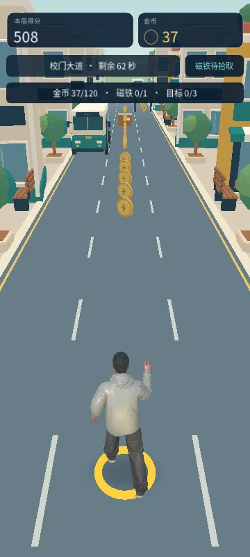

CAMPUS RUN / ROUTE CHALLENGE P2
选一条路，
跑出你的高分。
校园试玩第二版：每段只留一条金币路线。
换道、跳跃、滑铲，挑战 75 秒与 120 枚金币目标。
首次试玩需加载约 70 MB 资源，加载完成后点击“开始校园挑战”。
这是独立网页样段，正式安装包仍为 0.1.3，本页不会更新手机应用。

01 / 校门大道
前段先熟悉单路线换道与跳滑，金币之间留有空白缓冲。
02 / 街角便利街
中段开始交替换道、跳跃、滑铲；金币路线带来更高收益。
03 / 校园公交站
后段加入短动作组合与恢复段。可以绕开难点，也可以追币冲分。
金币少了，选路更有意义。
P2 实际运行截图，点击可放大；手机左右滑动查看。
P1 与 P2 画面对比
先看 15 秒的实际跑动。
视频与截图来自实际引擎运行，演示使用自动操作。手机上的实际流畅度请以在线试玩为准。
左右滑动换道，上滑跳跃，下滑滑铲。电脑可使用方向键或 WASD。
每段至多一条金币路线，沿途在三轨之间变化；不追金币可以选择避险。金币总量从 P1 同范围的 610 枚减少至 219 枚，跑速保持不变。
本局目标：跑完 75 秒、收集 120 金币、拾取一次磁铁。全程两次磁铁，每次持续 4 秒；失败可立即再试，P2 最佳成绩与 P1 分开保存。